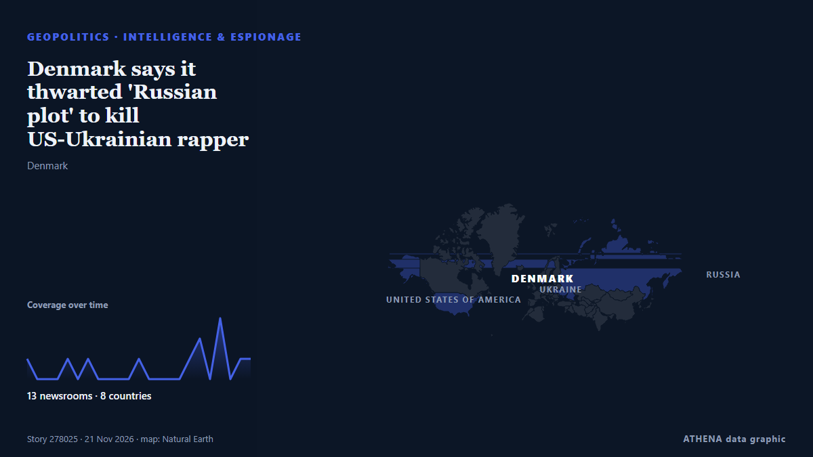

ATHENA Glaux Intelligence — Global news intelligence — every number explained
Every headline, checked across countries.
ATHENA Glaux reads 635 news outlets worldwide. A story becomes a verified event only when independent outlets report it. Each event shows who was first and a risk score with its reasons.
Reports drift in from independent outlets - when two meet on the same story, it becomes a verified event.
How ATHENA checks a story
- CollectReports arrive from independent outlets in many countries.
- MatchWhen two outlets meet on the same story, it becomes a verified event.
- ExplainEach event shows who was first, how far it spread and why the risk is what it is.

GeopoliticsDenmark says it thwarted 'Russian plot' to kill US-Ukrainian rapper
Police thwarted a Russian plot to kill a US-Ukrainian rapper who was performing in Denmark, according to authorities. from Sky News (World)
Yemen's Houthis threaten to strike Saudi Red Sea ports
Yemen’s Houthis threatened on Friday to attack Saudi Arabia’s Red Sea ports if Saudi-led coalition forces struck the strategic Red Sea port of Hodeidah. from Business Recorder
Poland condemns Russian ‘provocation’ after 3 airspace violations
The incursions happened as Poland was set to hold military exercises for the 'Coalition of the Willing', a group of Ukraine's allies, on Friday. from Free Malaysia Today

Ships at the world's chokepoints now
Live AIS counts. Tap or hover a bar for the detail.
Africa demands delivery on climate finance as COP31 closes
By Joyce Gyekye African countries have intensified calls for developed nations to honour their climate finance commitments, insisting that the outcome of COP31 must deliver concrete action on… from GBC Ghana Online
At Least 9 Killed In Russian Attacks On Ukraine, Kyiv Bridges Damaged
At least nine people were killed and 28 injured on November 20 in an overnight Russian drone and ballistic missile attack on Ukraine. from RFE/RL (English)
Waymo recalls robotaxis after they drove into closed freeway lanes
The recalls come after the California DMV banned Waymo from operating on its state freeways. from Engadget
Geopolitics, Politics & Security
More ›Ireland hit with more bomb threats as security preparations ramp up for EU summit
Dublin is preparing for the largest gathering of heads of state and government ever hosted by Ireland. from TheJournal.ie
- Elections & politics
With US midterms underway, courts rebuff Trump's pressure on state election officials
- Diplomacy & summits
Zelenskyy says Ukraine's NATO membership remains under discussion and would benefit both
- Diplomacy & summits
Denmark expels Russian diplomat over attempt to kill Ukrainian rapper
- Wars & conflicts
Saudi-Led Coalition Says Downed 3 Houthi Missiles Headed For Riyadh
Economics, Finance & Markets
More ›- Crypto & digital assets
Bitcoin rises over 2% to more than $60,000
- Forecasts & recession risk
Bezzecchi breaks lap record in Portugal to snatch pole from Marquez
- Shares & market moves
UK braced as temperatures could drop to minus 10C in coldest night of autumn
- Stocks, bonds & markets
Anthropic IPO turns more than 5,000 employees into millionaires
Trade, Industry & Infrastructure
More ›DM Khmara says Russia will need several months to raise damaged section of Kerch Bridge
Minister of Defense of Ukraine Yevhenii Khmara said Russia would need several months to raise the damaged section of the Kerch Bridge. from Ukrinform (English)
- Trade & trade deals
EU and Indonesia officially sign ‘ambitious’ trade deal
- Agriculture & food security
FBI, US Agriculture Department breached by hackers: reports
- Construction & infrastructure
Zelensky says Crimean Bridge strikes ‘fair response’ as he meets UK’s Streeting
- Aviation, rail & road
Indonesia elected to ICAO Council for 2026--2028 term
Energy, Resources & Environment
More ›Iraq reopens key road linking Jurf al-Nasr to Karbala
Road reopens a day after Iraqi forces begin redeployment in Jurf al-Nasr amid security measures and investigations into suspected oil smuggling. from Anadolu Agency (English)
- Climate & climate policy
Countries race to secure COP31 deal after fossil fuel row
- Electricity & power
Pashinyan outlines next steps in TRIPP project implementation
- Water & natural resources
World Fisheries Day highlights importance of sustainable Fishing and Fisherfolk livelihoods
- Climate & climate policy
UN launches Disaster Risk Financing Platform at COP31 to make humanitarian responses faster and more predictable
Technology, AI & Cybersecurity
More ›The FBI was hacked again, this time the breach targeted its crime database
The FBI is investigating an apparent breach of its nationwide criminal information database that serves as a lifeline between federal, state and local law enforcement, two people briefed on the… from Daily Mirror
- Artificial intelligence
Anthropic claims AI-assisted breakthrough on 167-year-old math problem
- Media & disinformation
New York Mayor Zohran Mamdani injured in soccer match against journalists
- Chips & computing
Trump's administration is sending mixed signals on chips, China and AI
- Chips & computing
TSMC tightens China AI chip curbs as new US rules close manufacturing loophole, sources say
Business, Companies & Investment
More ›Russia's Wildberries CEO Steps Down Days After EU Sanctions, Media Report
Nov 21 - Tatyana Kim, the head of Russia's largest online retailer Wildberries, has stepped down, Russian media reported on Saturday, days after the European Union added her to its Russia sanctions… from The Straits Times
- Corporate strategy
‘GTA 6’ Hits Massive $3.79 Billion in First-Day Sales
- Earnings & outlook
Iran advances in UN E-Government Development Index
- Investment & capex
Indonesia and China set out £47bn package of projects and investment plans
- Sectors & company risks
Japan automakers to standardize parts, materials for efficiency
Accidents & emergencies
More ›Man convicted of starting deadly 2025 Palisades blaze in Los Angeles
The Palisades fire killed 12 people as it incinerated entire neighbourhoods in Los Angeles and Malibu. from The Irish News (Belfast)
- Accidents & emergencies
Three Salvadoran Soldiers Die in Haiti Explosives Accident
- Accidents & emergencies
As e-bike battery fires mount, New York weighs tougher restrictions
- Accidents & emergencies
England will need fire and pride to beat New Zealand – Steve Borthwick
- Accidents & emergencies
APC campaign finance director dies in road crash
Three ways to read today
Start with the one that fits your timeVerified events
Ranked by how widely they are reported
- Jensen Huang has 5 ways to push for an Nvidia comeback146 outlets · 47 countriesRisk 4.4
- Tanker struck on stern off Oman's Khasab, a day after another ship set ablaze129 outlets · 46 countriesRisk 5.8
- Russian crew evacuating ship hit by drones off coast of Finland87 outlets · 41 countriesRisk 5.8
- Two Tankers Attacked in Strait of Hormuz80 outlets · 31 countriesRisk 5.2
- EU Proposes Tax on Big Tech to Boost Budget13 outlets · 16 countriesRisk 1.3
Analysis Desk
Ask a question and read a reasoned assessment of a leading story, with what would prove it wrong.
Open the Analysis Desk ›Today in numbers
| 18:00 | 645 |
|---|---|
| 19:00 | 636 |
| 20:00 | 621 |
| 21:00 | 95 |
| 22:00 | 0 |
| 23:00 | 0 |
| 00:00 | 0 |
| 01:00 | 0 |
| 02:00 | 0 |
| 03:00 | 0 |
| 04:00 | 0 |
| 05:00 | 0 |
| 06:00 | 0 |
| 07:00 | 561 |
| 08:00 | 1072 |
| 09:00 | 976 |
| 10:00 | 900 |
| 11:00 | 989 |
| 12:00 | 538 |
| 13:00 | 399 |
| 14:00 | 457 |
| 15:00 | 347 |
| 16:00 | 411 |
| 17:00 | 417 |
Risk of today's events
Emerging signals
- Sudden surge · Active nowGulf of Finland
- Sudden surge · Active nowSinaloa
- New name in the news · Active nowJonathan Rinderknecht
- Sudden surge · Active nowKryvyi Rih
- New name in the news · Active nowLewis Pugh
Official warnings
- M 5.9 - 238 km SW of Yanglong, ChinaM5.9 · PAGER yellow · USGS ·
- Orange notification for tropical cyclone AKVAN-26. Population affected by Category 1 (120 km/h) wind speeds or higher is 0 (20.826 million in Tropical Storm).Orange · GDACS ·
Stay informed
ATHENA Weekly Risk Picture
The week's biggest geopolitical, economic and shipping risks, cross-checked and scored.
Every Friday at 08:00 Athens time · free · in English
Subscribe freeATHENA on Telegram
News the moment it is published: breaking events at risk 6 or more, an hourly round-up, risk-tracker updates and the daily briefing at 10:00.
Free · posts in English · leave at any time
Join the channelSign-up is handled by beehiiv with double opt-in: nothing you type is sent to ATHENA, and every issue has an unsubscribe link.
Risk trackers
More ›Global risk outlook — week 47, 2026 (16–22 Nov) ›